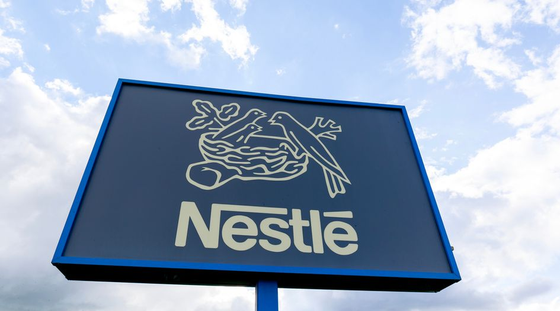
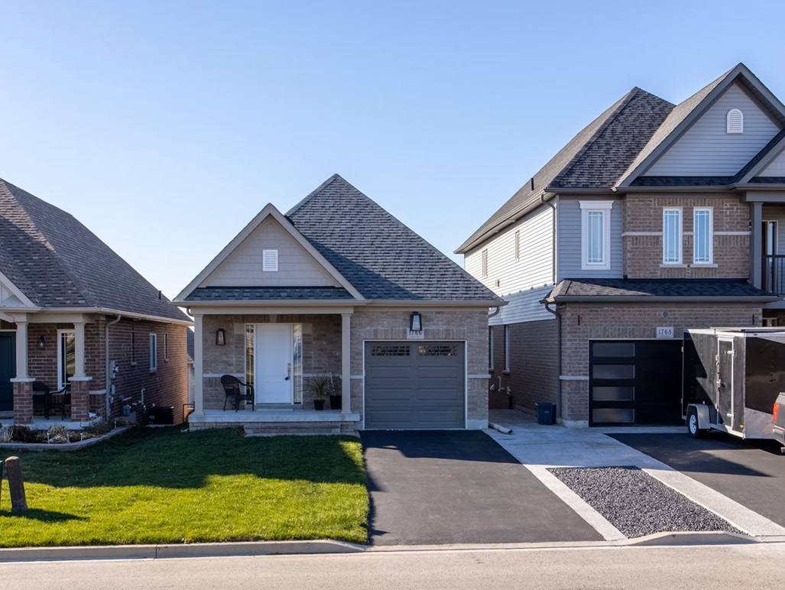

We developed a product comparison dashboard for Nestle to help take a decision on its expansion plans. Comparing different products based on revenue and performance across different locations.

Here, you'll find a collection of projects that showcase my ability to analyze, interpret, and present data using Tableau. Each project is designed to provide valuable insights through dashboards and visualizations.

Employ Power BI data source to developed an automated real-time visualization for a real-estate company to cater to various dimensions of the business, including transactions, properties, agents, and locations.

Developed an A/B Test Dashboard for two distinct versions of webpages (Version A and Version B) for the marketing team to analize user engagements metrics in order to identify which version is more effective.